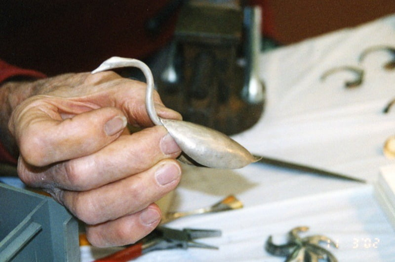
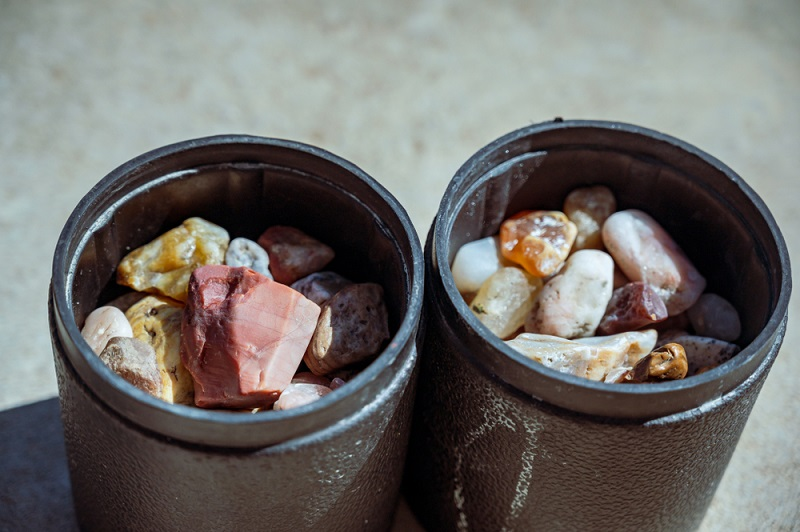

Guide to Indoor Lapidary Arts: Winter Edition
Winter is here! For rockhounds and gemstone enthusiasts, that means snow-covered landscapes, frozen rivers, and fewer chances to search for rocks outdoors. But don't worry—there's no need to let your love for rocks hibernate this season. Instead, bring your passion indoors with lapidary arts!
Lapidary is the art of cutting, shaping, and polishing stones to turn them into beautiful creations like jewelry, decorations, or collectibles. It's not just a hobby—it's an adventure you can start right at home. In this guide, we'll show you how to dive into lapidary arts, even if you're a complete beginner. Plus, we'll share cool projects and tips to keep your winter exciting and rock-tastic!
What Are Lapidary Arts?
Lapidary arts have been around for thousands of years. Ancient civilizations, like the Egyptians and the Mayans, used lapidary techniques to create dazzling jewelry, tools, and sculptures. But you don't need to be a history buff to appreciate it!
Simply put, lapidary is the art of transforming rough stones into smooth, polished masterpieces. This can include:
- Cutting stones into specific shapes.
- Polishing to bring out their natural shine and color.
- Carving designs into stones.
- Setting gemstones into jewelry.
Lapidary arts are relaxing, creative, and a fun way to stay connected to your love for rocks—even when it's too cold to dig them up.
Why Winter Is the Perfect Time for Lapidary Arts
Winter is when the outdoors slows down, but your rockhounding journey doesn't have to! Lapidary arts give you the perfect indoor activity to:
- Stay connected to your hobby while rockhounding is off the table.
- Learn new skills you can use next spring when you're back in the field.
- Create personalized gifts or keepsakes, like handmade jewelry or polished stones.
- Enjoy a creative and calming activity during the chilly months.
Don't let winter weather stop you from exploring the beauty of rocks—turn them into works of art from the warmth of your home.
Getting Started with Lapidary Arts
Starting lapidary arts at home is easier than you might think. You don't need expensive equipment or rare stones to begin. Here's what you'll need:
Essential Tools for Beginners
- Rock tumbler: Perfect for polishing stones. Tumblers are easy to use and great for beginners.
- Trim saw: A small saw for cutting stones into smaller pieces. See one!
- Dop stick: A tool to hold your stone while you shape or polish it.
- Polishing compounds: These bring out the final shine in your stones. Check here!
- Safety gear: Always wear goggles and gloves to protect yourself.
Many beginner kits come with everything you need, so look for starter lapidary sets online.
Beginner-Friendly Stones
Some stones are easier to work with than others. Try these beginner-friendly options:
- Agates: Durable and comes in many colors.
- Quartz: Easy to shape and polish.
- Jasper: Great for carving and polishing.
You can find rough stones online, at craft stores, or maybe even in your backyard!
Setting Up Your Workspace
A good workspace is key to enjoying lapidary arts. Here's what you'll need:
- A sturdy table or workbench.
- Good lighting to see every detail.
- Ventilation to avoid breathing in dust.
- A water source or container to cool stones and keep dust down.
Pro Tip: Dedicate a corner of your garage or a spare room to your new hobby.
Beginner-Friendly Winter Projects
Ready to get started? Here are some fun and simple lapidary projects perfect for beginners:
- Polish Stones in a Tumbler
This is the easiest way to get started. Just place rough stones, grit, and water into a rock tumbler, turn it on, and wait for the magic to happen!
Time required: 1-2 weeks (the tumbler works while you relax).
What you'll need: Rock tumbler, grit, rough stones.
Why it's fun: Watching dull stones turn into shiny gems is like unwrapping a present! - Make a Cabochon
A cabochon is a smooth, rounded stone often used in jewelry. Here's how to make one:
- Use a trim saw to cut a small piece of stone.
- Attach the stone to a dop stick.
- Shape and polish the stone with a grinder or sandpaper.
- Create Stone Jewelry
Turn your polished stones into wearable art! You can:
- Wrap them with wire to make pendants.
- Glue them to earring posts.
- Add them to keychains or bookmarks.
- Try Stone Carving
Use a rotary tool to carve simple designs into soft stones like soapstone or alabaster. Start with shapes like hearts, stars, or your initials.
These projects are not only fun but also great gifts for friends and family!
Safety Practices for Lapidary Arts
Lapidary arts are safe if you follow a few simple rules:
- Wear Safety Goggles: Protect your eyes from flying debris.
- Use Gloves: Keep your hands safe while cutting or polishing.
- Ventilate Your Workspace: Stone dust can be harmful if inhaled. Open windows or use a fan.
- Handle Chemicals Carefully: Polishing compounds and adhesives should be used as directed.
- Take Breaks: Working on small details for a long time can strain your hands and eyes.
By staying safe, you can enjoy this hobby without any worries.
Advanced Tips for Aspiring Lapidaries
If you're loving lapidary arts and want to go deeper, here are some advanced tips:
- Join a Community: Find online forums or groups where rockhounds and lapidaries share advice, projects, and inspiration.
- Take a Class: Look for virtual workshops or video tutorials to learn advanced techniques.
- Upgrade Your Tools: As you gain experience, you might want to invest in better saws, grinders, or faceting machines.
- Document Your Work: Take pictures of your creations to track your progress and share your art with others.
- Plan for Spring Rockhounding: Use winter to organize your tools and research new rockhounding spots.
Visit www.rockhounding.org to discover more tips, resources, and community stories to keep your passion alive all year round.
Conclusion
Lapidary arts are the perfect winter activity for rock lovers. Whether you're polishing stones in a tumbler, creating your first cabochon, or carving simple designs, this hobby offers endless fun and creativity. Best of all, you don't need to be an expert to start.
This winter, don't let the weather keep you from enjoying your favorite pastime. Grab some stones, fire up your tools, and let the adventure continue indoors. Who knows—you might discover a whole new side of your rockhounding passion!
So what are you waiting for? Start your lapidary journey today and create something extraordinary.
Happy crafting, rockhounders!